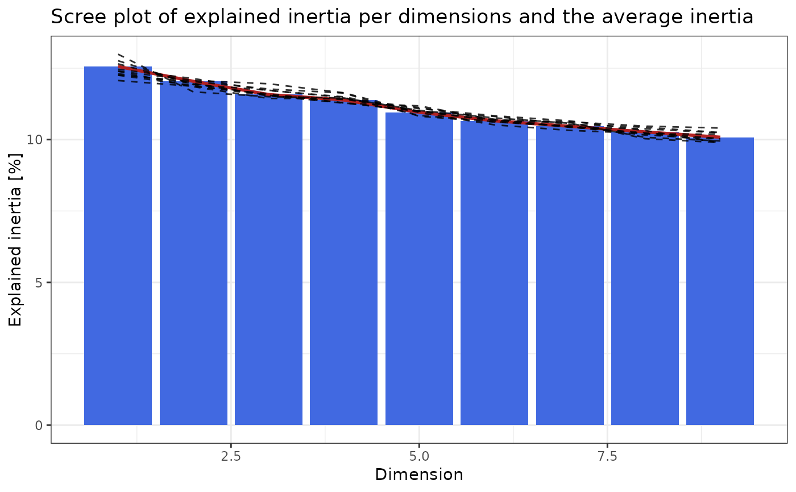

Compute statistics to help choose the number of dimensions
pick_dims.RdAllow the user to choose from 4 different methods ("avg_inertia", "maj_inertia", "scree_plot" and "elbow_rule") to estimate the number of dimensions that best represent the data.
Usage
pick_dims(
obj,
mat = NULL,
method = "scree_plot",
reps = 3,
python = FALSE,
return_plot = FALSE,
...
)
# S4 method for cacomp
pick_dims(
obj,
mat = NULL,
method = "scree_plot",
reps = 3,
python = FALSE,
return_plot = FALSE,
...
)
# S4 method for Seurat
pick_dims(
obj,
mat = NULL,
method = "scree_plot",
reps = 3,
python = FALSE,
return_plot = FALSE,
...,
assay = Seurat::DefaultAssay(obj),
slot = "counts"
)
# S4 method for SingleCellExperiment
pick_dims(
obj,
mat = NULL,
method = "scree_plot",
reps = 3,
python = FALSE,
return_plot = FALSE,
...,
assay = "counts"
)Arguments
- obj
A "cacomp" object as outputted from
cacomp(), a "Seurat" object with a "CA" DimReduc object stored, or a "SingleCellExperiment" object with a "CA" dim. reduction stored.- mat
A numeric matrix. For sequencing a count matrix, gene expression values with genes in rows and samples/cells in columns. Should contain row and column names.
- method
String. Either "scree_plot", "avg_inertia", "maj_inertia" or "elbow_rule" (see Details section). Default "scree_plot".
- reps
Integer. Number of permutations to perform when choosing "elbow_rule". Default 3.
- python
A logical value indicating whether to use singular value decomposition from the python package torch. This implementation dramatically speeds up computation compared to
svd()in R.- return_plot
TRUE/FALSE. Whether a plot should be returned when choosing "elbow_rule". Default FALSE.
- ...
Arguments forwarded to methods.
- assay
Character. The assay from which to extract the count matrix for SVD, e.g. "RNA" for Seurat objects or "counts"/"logcounts" for SingleCellExperiments.
- slot
Character. Data slot of the Seurat assay. E.g. "data" or "counts". Default "counts".
Value
For avg_inertia, maj_inertia and elbow_rule (when return_plot=FALSE)
returns an integer, indicating the suggested number of dimensions to use.
scree_plotreturns a ggplot object.elbow_rule(forreturn_plot=TRUE) returns a list with two elements: "dims" contains the number of dimensions and "plot" a ggplot.
Details
"avg_inertia" calculates the number of dimensions in which the inertia is above the average inertia.
"maj_inertia" calculates the number of dimensions in which cumulatively explain up to 80% of the total inertia.
"scree_plot" plots a scree plot.
"elbow_rule" formalization of the commonly used elbow rule. Permutes the rows for each column and reruns
cacomp()for a total ofrepstimes. The number of relevant dimensions is obtained from the point where the line for the explained inertia of the permuted data intersects with the actual data.
Examples
# Simulate counts
cnts <- mapply(function(x){rpois(n = 500, lambda = x)},
x = sample(1:20, 50, replace = TRUE))
rownames(cnts) <- paste0("gene_", 1:nrow(cnts))
colnames(cnts) <- paste0("cell_", 1:ncol(cnts))
# Run correspondence analysis.
ca <- cacomp(obj = cnts)
#> Warning:
#> Parameter top is >nrow(obj) and therefore ignored.
# pick dimensions with the elbow rule. Returns list.
set.seed(2358)
pd <- pick_dims(obj = ca,
mat = cnts,
method = "elbow_rule",
return_plot = TRUE,
reps = 10)
#>
|
| | 0%
|
|======= | 10%
|
|============== | 20%
|
|===================== | 30%
|
|============================ | 40%
|
|=================================== | 50%
|
|========================================== | 60%
|
|================================================= | 70%
|
|======================================================== | 80%
|
|=============================================================== | 90%
|
|======================================================================| 100%
pd$plot

ca_sub <- subset_dims(ca, dims = pd$dims)
# pick dimensions which explain cumulatively >80% of total inertia.
# Returns vector.
pd <- pick_dims(obj = ca,
method = "maj_inertia")
ca_sub <- subset_dims(ca, dims = pd)
################################
# pick_dims for Seurat objects #
################################
library(Seurat)
set.seed(1234)
# Simulate counts
cnts <- mapply(function(x){rpois(n = 500, lambda = x)},
x = sample(1:20, 50, replace = TRUE))
rownames(cnts) <- paste0("gene_", 1:nrow(cnts))
colnames(cnts) <- paste0("cell_", 1:ncol(cnts))
# Create Seurat object
seu <- CreateSeuratObject(counts = cnts)
#> Warning: Feature names cannot have underscores ('_'), replacing with dashes ('-')
#> Warning: Data is of class matrix. Coercing to dgCMatrix.
# run CA and save in dim. reduction slot.
seu <- cacomp(seu, return_input = TRUE, assay = "RNA", slot = "counts")
#> Warning:
#> Parameter top is >nrow(obj) and therefore ignored.
# pick dimensions
pd <- pick_dims(obj = seu,
method = "maj_inertia",
assay = "RNA",
slot = "counts")
##############################################
# pick_dims for SingleCellExperiment objects #
##############################################
library(SingleCellExperiment)
set.seed(1234)
# Simulate counts
cnts <- mapply(function(x){rpois(n = 500, lambda = x)},
x = sample(1:20, 50, replace = TRUE))
rownames(cnts) <- paste0("gene_", 1:nrow(cnts))
colnames(cnts) <- paste0("cell_", 1:ncol(cnts))
# Create SingleCellExperiment object
sce <- SingleCellExperiment(assays=list(counts=cnts))
# run CA and save in dim. reduction slot.
sce <- cacomp(sce, return_input = TRUE, assay = "counts")
# pick dimensions
pd <- pick_dims(obj = sce,
method = "maj_inertia",
assay = "counts")